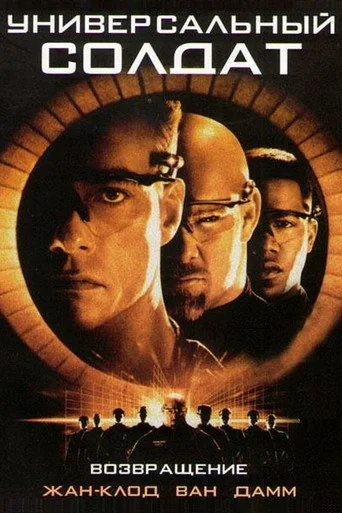

Универсальный солдат: Возвращение 1999
Универсальный солдат - совершенная кибернетическая машина убийства, неустрашимый воин, который не ведает боли и страха. Когда-то Люк Деваро был одним из них. Теперь в качестве технического эксперта он работает над созданием новых непобедимых роботов в человеческом облике, киборгов следующего поколения. Секретный проект подходит к своей кульминационной точке, но в этот момент суперкомпьютер, контролирующий целую армию универсальных солдат, выходит из повиновения. Он находит себе неуязвимое тело и возглавляет легион идеальных убийц. Совершенное оружие, созданное правительством для защиты людей, оборачивается против человечества. И никому не дано знать, что происходит внутри неуправляемой машины. Кроме того, кто уже однажды был ею...
Открыть в каталогеДанные и постеры принадлежат их правообладателям. Этот продукт использует TMDB API, но не одобрен и не сертифицирован TMDB.